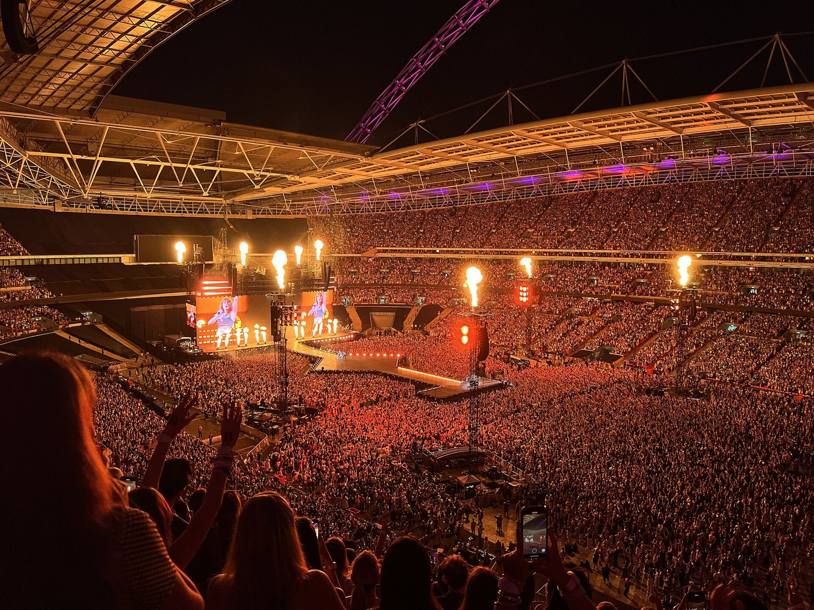

在一切开始之前
夺回自己的歌
她花了六年，用重新录一遍的方式，把自己写的歌拿了回来。

The Eras Tour
2023.03.17 格兰岱尔 — 2024.12.08 温哥华
四座年度专辑
格莱美年度专辑是流行音乐的最高荣誉。拿过四次的，只有她一个人。点开每一座看看。
做一串友谊手链
Eras Tour 的场馆门口，陌生人互相交换手串。输入你想串的字母，挑一个时代的配色。
It's been a long time coming.
从十六岁的乡村女孩，到史上票房最高的巡演。
十二张专辑，二十年，一场时代巡礼。
开启声音后，往下滚动到哪个时代，就会播放那个时代的歌。
她花了六年，用重新录一遍的方式，把自己写的歌拿了回来。

2023.03.17 格兰岱尔 — 2024.12.08 温哥华
格莱美年度专辑是流行音乐的最高荣誉。拿过四次的，只有她一个人。点开每一座看看。
Eras Tour 的场馆门口，陌生人互相交换手串。输入你想串的字母，挑一个时代的配色。